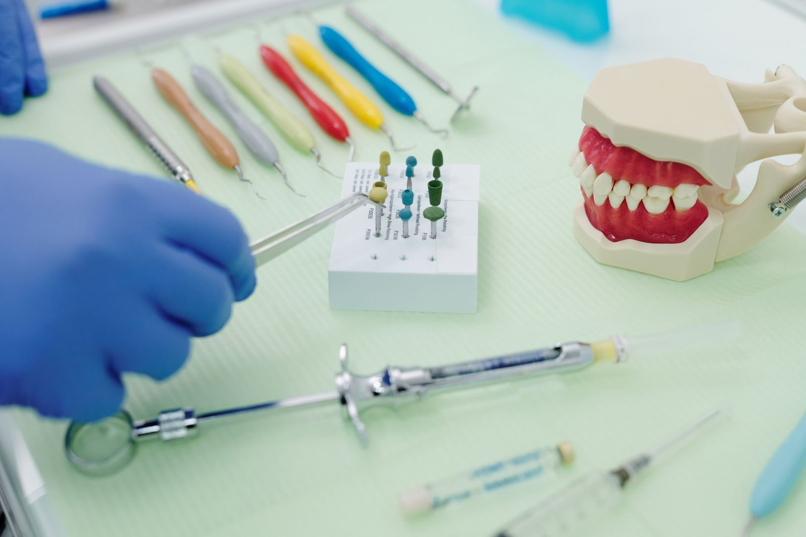

🍼
Bebés, niños y adolescentes
Atención desde los primeros dientes hasta la adolescencia, con un ritmo adaptado a cada edad.
La Dra. Elizabeth Medina atiende a bebés, niños y adolescentes con paciencia y un trato cálido. Certificada por el Consejo Mexicano de Odontología Pediátrica y formada en el Instituto Nacional de Pediatría.
Atención infantil
El consultorio se especializa en odontopediatría: prevención, tratamientos y acompañamiento para que la visita no sea un momento de miedo.
Atención desde los primeros dientes hasta la adolescencia, con un ritmo adaptado a cada edad.
Las familias destacan que la doctora explica el tratamiento con claridad y resuelve dudas con paciencia.
Atención especializada para pacientes con enfermedades sistémicas, labio y paladar hendido y niños con necesidades especiales, según la información publicada por el consultorio.
Consultorio principal en Atenco y, según sus publicaciones, también en San Pablito Chiconcuac.

Fotos de stock de referencia; no son del consultorio de Atenco.
Primera visita
Escríbenos por WhatsApp o llama al 55 2055 7257 para elegir un horario en la tarde, cuando el consultorio está abierto.
Las reseñas destacan su paciencia, sobre todo con niñas y niños que llegan con una mala experiencia previa.
Te explica el tratamiento a detalle y resuelve dudas antes de avanzar, según comentan las familias en Google.

La doctora
En las reseñas de Google, las mamás y papás hablan de un trato respetuoso, de precios accesibles en la zona y de avances visibles en el tratamiento. La Dra. Medina está certificada por el CMOP y se formó en el Instituto Nacional de Pediatría.
La foto del consultorio es de stock y sirve como referencia visual.
Extractos reales de reseñas públicas. Calificación 4.7 de 5, con 22 reseñas en la ficha de Google.
★★★★★“Fue mi primera opción para mi hija, y me gustó mucho la paciencia que le tuvo, ya que mi niña es difícil. La trató con mucho cariño, y también creo que en la zona tiene un precio accesible.”
Reseña en Google · diciembre de 2025
★★★★★“Muy buena doctora, sabe tratar bien a los niños. Con otro dentista no vimos avances en más de 6 meses y con la Doctora Elizabeth al mes ya se veía la mejoría. La recomiendo ampliamente.”
Reseña en Google · agosto de 2025
★★★★★“100% recomiendo, es muy profesional y paciente. En mi experiencia ha tratado con mucho cariño a mi bebé, que venía con una mala experiencia, y ha logrado que mi niña se sienta segura.”
Reseña en Google · agosto de 2025
Dudas frecuentes
Según la ficha de Google: lunes a viernes de 13:00 a 19:00 y sábados de 13:00 a 16:00. Domingo cerrado. Algunos directorios muestran horarios distintos; te recomendamos confirmar al agendar.
El consultorio indica que atiende a bebés, niños y adolescentes. La primera revisión suele recomendarse con la erupción de los primeros dientes o alrededor del primer año; confirma el momento ideal al pedir tu cita.
Sí. En sus publicaciones el consultorio señala atención especializada para pacientes con enfermedades sistémicas, labio y paladar hendido y niños con necesidades especiales.
Por WhatsApp o llamando al 55 2055 7257. También puedes escribir a consultorio@draelizabethodontopediatra.com.
En sus redes se anuncia un segundo punto en Calle Ejido Sur s/n, San Pablito Chiconcuac, con el teléfono 55 4029 9642. Confirma sede y horario al agendar.
Callejón de Las Huertas 536, San Salvador Atenco, C.P. 56300, Estado de México. Abajo está el mapa y el botón para abrir la ruta.
Visítanos
Dirección
Callejón de Las Huertas 536, San Salvador Atenco, 56300, Méx.
Teléfono
55 2055 7257
Correo
consultorio@draelizabethodontopediatra.com
Horario publicado en Google
| Lunes a viernes | 13:00 – 19:00 |
| Sábado | 13:00 – 16:00 |
| Domingo | Cerrado |
También en Chiconcuac
Calle Ejido Sur s/n, San Pablito Chiconcuac · 55 4029 9642 (dato de sus publicaciones en Facebook).
Un espacio pensado para que los pequeños se sientan seguros.
Escribir por WhatsApp